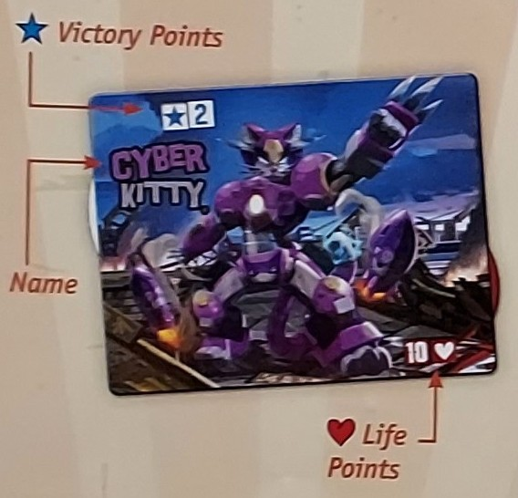
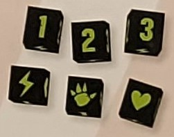
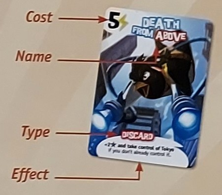
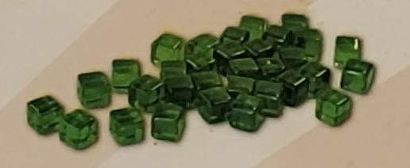
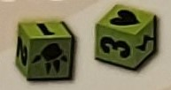
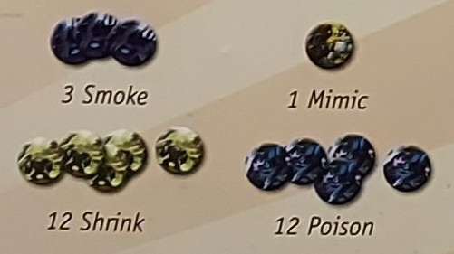

A Game By Richard Garfield
King of Tokyo is a game for 2 to 6 players where you play as mutant monsters, rampaging robots, or even abominable aliens battling in a fun, chaotic atmosphere. Roll dice and choose your strategy; Will you attack your enemies? Heal your wounds? Improve your monster? Stomp your path to victory!
Your mission: Destroy everything in you path to become the one and only King of Tokyo
You are a gigantic monster willing to do anything to become King of Tokyo.
Your rampage brings you glory in the form of Victory points (). To win, be the first Monster to gain 20 Victory Points.
Or, get your claws out and eliminate you enemies. The last one standing claims victory!
6 Monster Boards
These boards represent the Monsters that you play as in King of Tokyo. Each has a name, a dial for Victory points (), and a dial for Life Points ().
1 Tokyo Board
The board represents the City of Tokyo divided into two places: 1 Tokyo City and 2Tokyo Bay. When a rule or card refers to "Tokyo", it means both places.
6 Black Dice
Each die has 6 symbols that represent the actions you can take on your turn:
: Gain Victory Points ()
: Gain Energy cubes ()
: Smash Monsters to lose Life Points ()
: Gain Life Points ()
66 Power Cards
Power cards have a name, a cost to pay in Energy cubes (), a type (Keep/Discard) and an effect.
Power cards can be one of two different types:
Keep : Keep these cards face-up in front of you until the end of the game (unless something tells you to do otherwise).
Discard : Resolve these cards immediately, then discard them.
6 Cardboard Figures
These Figures represent Monsters you play as. Keep them near you. When you take control of Tokyo, place your monster on the board, in 1 Tokyo City or 2Tokyo Bay.
Energy Cubes
Keep energy cubes you've gained from die faces. You spend them to buy cards or to resolve or activate certain card effects.
28 Tokens and 2 Green Dice
the tokens and green dice are used with certain Power cards.
 The gameplays